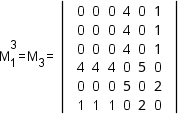

Aviões e Matrizes

Voos com mais escalas
O resultado observado na parte anterior (M2=M1²) não vale apenas para aquele caso particular, mas sim para qualquer matriz que represente um grafo da maneira estabelecida (chamada matriz de adjacência). Para entender essa propriedade matemática, acompanhe passo a passo o cálculo de uma das células da matriz M2:
Para calcular, por exemplo, o valor da entrada m4,6 da matriz M1², devem-se multiplicar os termos da linha 4 pelos termos da coluna 6:
linha 4: | 1 1 1 0 1 0 |, coluna 6: | 0 0 0 0 1 0 |
O que resulta em:
m4,6 = 1.0 + 1.0 + 1.0 + 0.0 + 1.1 + 0.0 = 1
Cada parcela da soma representa um possível caminho entre as duas cidades. A primeira parcela, por exemplo, representa o caminho passando pela cidade 1. Mas como a cidade 6 não está ligada à cidade 1, o zero aparece na multiplicação, anulando essa parcela.
A única parcela não nula é a quinta. Ela representa o caminho passando pela cidade 5, à qual tanto a cidade 4 como a cidade 6 estão ligadas. Se houvesse mais alguma ligação entre elas, o resultado da soma seria maior do que 1, e significaria o número de possíveis caminhos ligando as duas cidades.
Além disso, essa propriedade também vale para potências maiores da matriz M1. Por exemplo, M1³ é igual à matriz que representa as ligações com 3 voos e assim por diante. Abaixo, está a matriz M1³ para o grafo que você está analisando:
